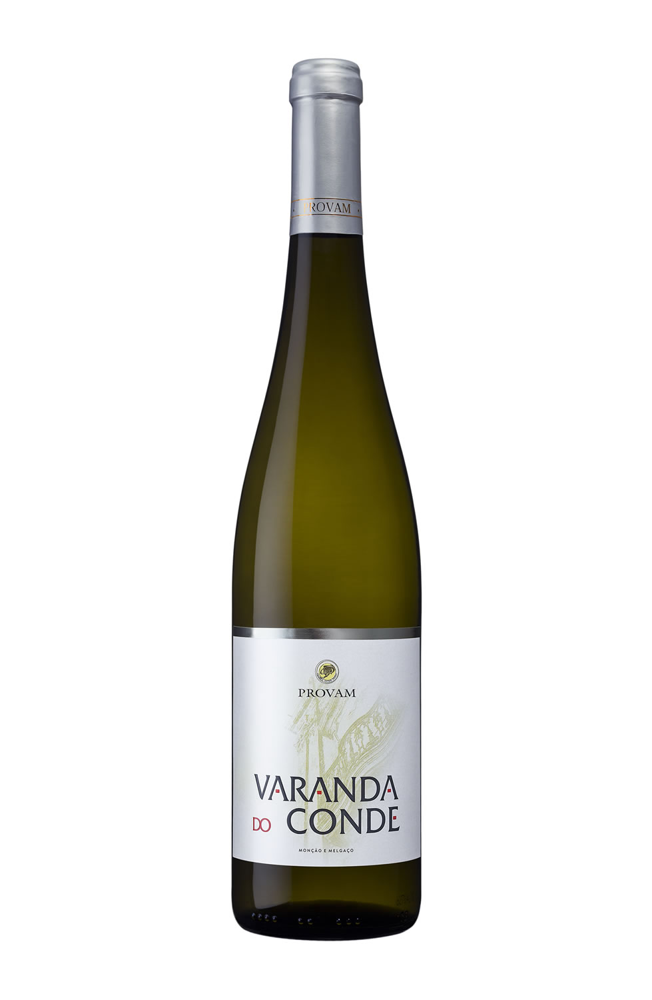

Varanda do Conde- Alvarinho/Trajadura - Provan

No noroeste da Península Ibérica, às margens do rio Minho, encontra-se a sub-região de Monção e Melgaço. É o berço da Alvarinho, apontada como uma das mais nobres cepas autóctones portuguesas e utilizada não apenas na elaboração de brancos de qualidade, mas também na do vinho que leva seu nome, um tipo de Vinho Verde.
Em 1992, um grupo de 10 viticultores locais decidiu se unir para produzir rótulos a partir da casta símbolo da região, tanto pura como associada à Trajadura. Nascia assim a Provam, que atualmente tem capacidade de produção de 510 mil litros.